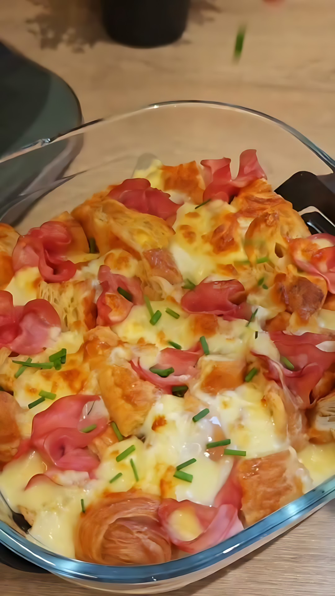

Anzeige
 AnzeigeNinja CRISPi PRO XL · MoosgrünDie Glas-Heißluftfritteuse aus dem Video.Produkt ansehen ↗
AnzeigeNinja CRISPi PRO XL · MoosgrünDie Glas-Heißluftfritteuse aus dem Video.Produkt ansehen ↗
Herzhafter Croissant-Auflauf mit Schinken, Ei & Käse
Herzhafter Croissant-Auflauf mit Schinken, Ei & Käse – das perfekte Frühstück für die ganze Familie!
- 6 Zutaten
- 4 Schritte
Zur Zubereitung Video ansehen ↗
Zutaten
AnzeigeNinja CRISPi PRO XL · MoosgrünDie Glas-Heißluftfritteuse aus dem Video.Produkt ansehen ↗Als Amazon-Partner verdiene ich an qualifizierten Verkäufen.
Zubereitung
- Croissants in Stücke schneiden und mit Schinken und Käse in den Behälter der Ninja CrispiPro geben. Eier mit Milch und Gewürzen verquirlen und darüber gießen. Bei 170 °C im BAKE-Programm ca. 10–12 Minuten backen, bis die Eier gestockt sind.
- Schnell, einfach und superlecker!
- BLACK FRIDAY IST DA! Hol dir deine Ninja CrispiPro bei Amazon über meinen Link in der Bio – solange das Angebot läuft!
- ninja.deutschland